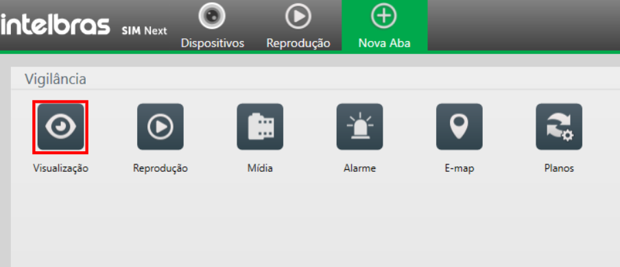
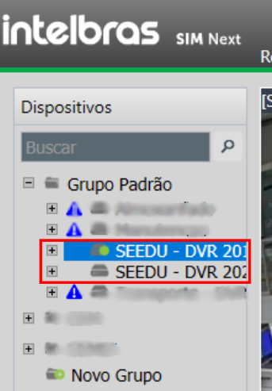
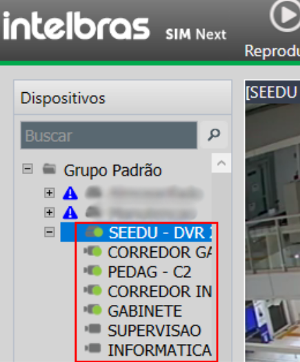
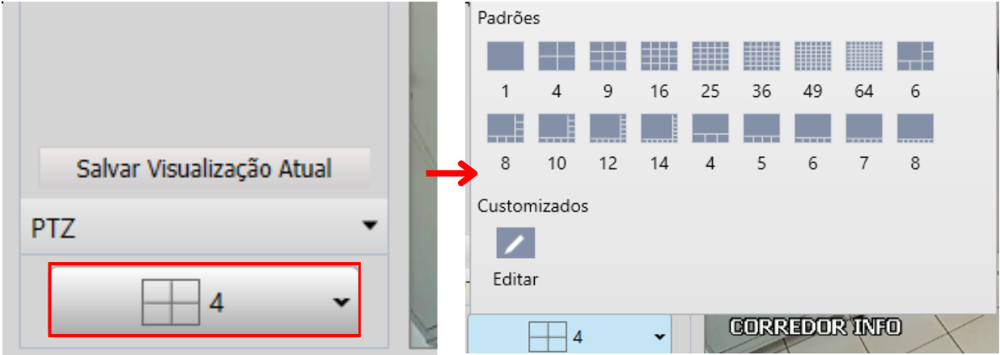
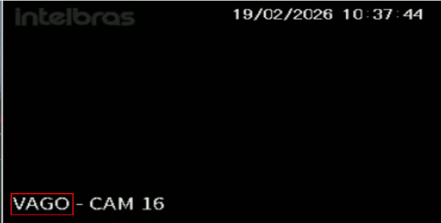
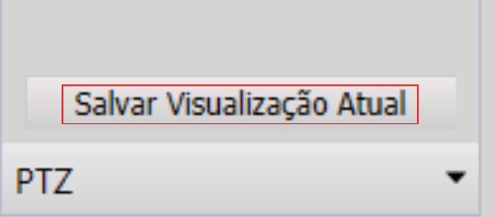

Tutorial
Câmeras: Visualização ao Vivo
Abra as câmeras em tempo real, monte sua grade favorita e salve a visualização.
1
Abrir visualização
No SIM Next, clique em Visualização.

2
Selecionar câmeras
Expanda o DVR e arraste a câmera para a grade ou dê duplo clique.


3
Mudar a grade e salvar
Entradas marcadas como VAGO indicam canais livres, não erro.
Use o seletor de grade e depois salve a visualização atual.


